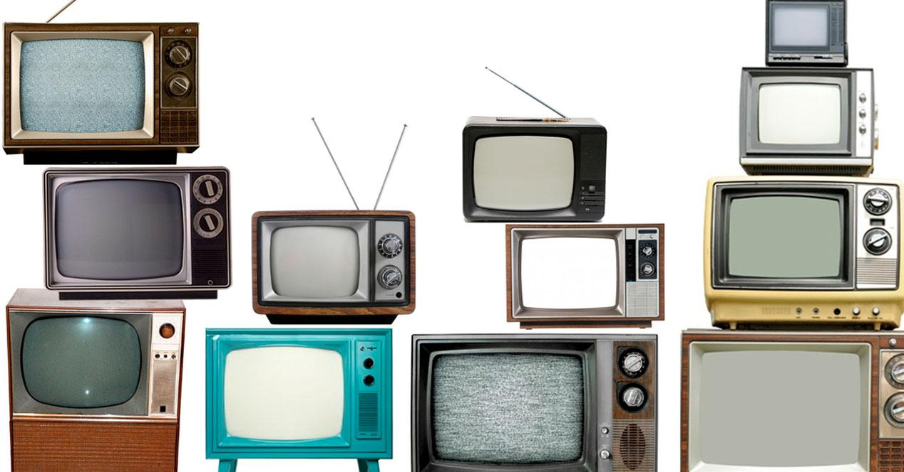

¿Qué es la television?

La televisión es un medio de comunicación que transmite imágenes en movimiento y sonido a través de ondas electromagnéticas o señales digitales, con el objetivo de informar, educar y entretener a una audiencia masiva.
Características de la television
Combina imagen y sonido en tiempo real. Es un medio de comunicación masivo. Puede ser analógica, digital, satelital o por internet (IPTV, streaming). Influye fuertemente en la opinión pública y la cultura. Ofrece programación variada: noticias, entretenimiento, deportes, educación, etc.
Tipos de television
Por tecnología: Analógica, digital, satelital, por cable, IPTV. Por resolución: SD, HD, Full HD, 4K, 8K. Por programación: Pública, privada, cultural, educativa, comercial. Por formato: Televisión en vivo, diferida, streaming.
Historia de la television
1927: Se logra la primera transmisión experimental en EE. UU. 1936: BBC inicia transmisiones regulares en Reino Unido. Década de 1950: Expansión global y popularización de la TV en blanco y negro. Década de 1960: Llega la televisión a color. Década de 1990: Aparición de la televisión satelital y por cable. Siglo XXI: Televisión digital, HD, 4K, 8K y plataformas de streaming.
Funciones de la television
Informativa: Noticias y reportajes. Educativa: Programas culturales y académicos. Entretenimiento: Series, películas, concursos, reality shows. Publicitaria: Medio clave para la difusión de marcas y productos. Social: Refleja y moldea tendencias culturales.
La importancia de la television
Ha sido uno de los medios más influyentes del siglo XX y XXI. Permite la difusión inmediata de información a gran escala. Promueve la cultura y la educación audiovisual. Es un motor de la industria del entretenimiento y la publicidad.
Ventajas y desventajas de la television
Ventajas:
Combina imagen y sonido, lo que facilita la comprensión. Gran poder de alcance e influencia social. Variedad de contenidos para distintos públicos. Posibilidad de transmitir en vivo eventos importantes.Desventajas:
Puede fomentar la pasividad en el espectador. Riesgo de manipulación informativa o cultural. Publicidad excesiva. Competencia actual con internet y plataformas de streaming.